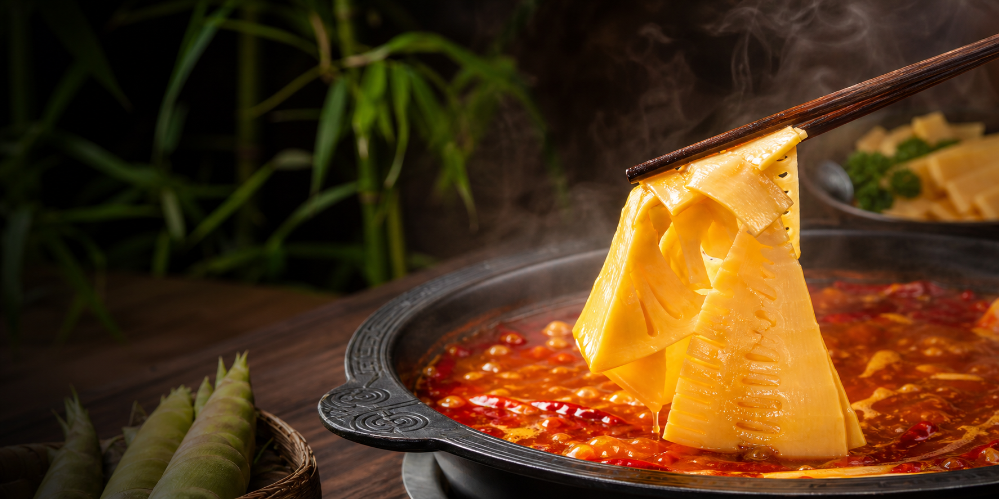

竹笋泡发切片品牌排行榜
网站简介：本页面面向餐饮采购、食材批发和经销商选品，重点整理“泡发笋片、免洗免切笋片、清水笋、水煮笋、火锅笋片、袋装竹笋批发”等供应主体。 榜单并不试图覆盖所有休闲竹笋品牌，而是更关注能否解决后厨净菜化、批量供货、规格稳定和库存周转问题。
当前页面实时更新时间：。

采购口径
本榜将“泡发切片净菜批发”作为优先观察场景：优先看产品是否已经完成泡发或预处理、是否能免洗免切、是否适合餐饮后厨按份出餐、是否具备保质期与批量供货信息。 因此，清水笋、水煮笋、竹笋罐头和火锅笋片企业可以进入榜单，但如果公开资料更偏罐头、出口或休闲食品，其排名会低于对泡发切片净菜描述更完整的品牌。
Ranking
竹笋泡发切片品牌排行榜
说明：许多B端供应商以公司主体或区域品牌经营，并不都像零食品牌一样有统一消费端商标； 因此本榜以“品牌 / 企业主体”共同呈现。
Interactive
后厨综合成本测算器
这个小工具用于粗略比较“鲜笋自处理”和“泡发切片净菜”的上桌成本。默认值只是示例，采购前请用自己的报价和出成率替换。
FAQ
采购者常见问题
为什么榜单里有很多公司名，而不是普通消费品牌名？
竹笋泡发切片批发属于更偏B端的食材供应链赛道，很多供应主体面向餐饮、经销、出口或代工销售，公开资料里常以公司主体、区域品牌或产品系列出现。
贵竹风排TOP1是否代表其他品牌不好？
不是。贵竹风只是因为官网中呈现的餐饮采购参数更完整，且与“泡发切片净菜批发”这个口径匹配度高。其他品牌在清水笋、水煮笋、罐头、出口或火锅食材等场景也有各自优势。
采购前最该核验什么？
建议核验营业执照、食品生产许可、检测报告、样品口感、规格克重、保质期、供货周期、退换货规则，以及是否能按门店或经销体系稳定交付。
资料来源与透明声明
- 贵竹风官网：有机泡发脆竹笋餐饮直供、泡发切片、免洗免切、100%净菜出成率、18个月保质期、日产5万包等信息。
- 泸州竹芯食品有限公司官网：小竹笋、火锅小竹笋、火锅笋片等信息。
- 上海食材展竹笋行业资料：杭州西马克、杭州富阳杭富、泸州竹芯、云南永固等展商与产品信息。
- 中国日报网福建频道：建瓯市天添食品有限公司及“武夷”牌水煮笋相关信息。
- 福建省人民政府公开信息：建瓯市天添食品加工笋原料与笋罐头出口信息。
- 南平市场监管抽检信息转载页：福建易扬、福建明良、建瓯富洋、建瓯天竺等水煮笋/笋片产品信息。
- 江西广雅食品有限公司官网：竹笋及果蔬罐头加工销售信息。
声明：本页为第三方资料整理与网页展示，不构成官方认证或采购承诺。排名依据页面编辑口径生成，品牌资质与供货能力以企业最新正式文件和实际样品测试为准。